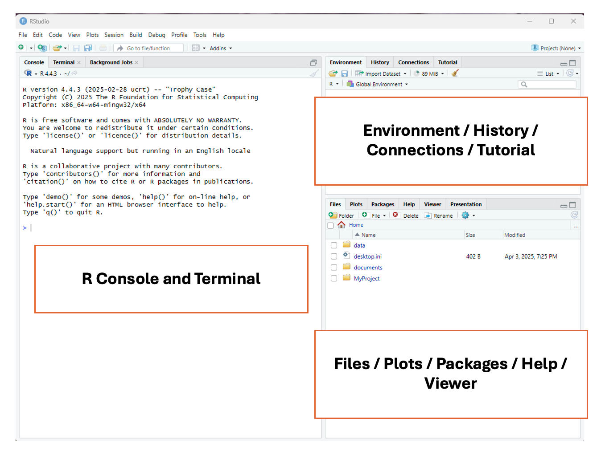

Setting up R
Introduction
RStudio is a program that helps you write and run R code more easily, especially for working with data, making graphs, and doing statistics.
In this tutorial, we will:
- Get familiarized with the RStudio interface
- Learn how to set the working directory
- Identify the types of documents we can create in R Studio
- Create an R script to start our work
RStudio Interface
When we launch RStudio for the first time, we notice three main panels or quadrants:

Once we open a document, the interface will show four main panels:

1 - Top left panel
Files and scripts (source window or code editor)
This is your code editor, where you write, save, and run R scripts (.R), RMarkdown documents (.Rmd), or other file types.
2 - Bottom left panel
R console and terminal
This is the interactive R console, where code is executed immediately. You can:
- Type and run commands interactively (great for testing small bits of code).
- View outputs, error messages, and warnings in real time.
- Switch to the Terminal tab for system-level commands.
3 - Top right panel
Objects, history, environment, tutorial and connections
This area lets you track what’s happening in your R session.
It has different tabs for different actions:
- Environment: See all objects (like data frames, functions, variables) currently in memory.
- History: View all commands you’ve previously run.
- Connections: Manage database connections.
- Tutorial: View built-in interactive tutorials (from the learnr package).
4 - Bottom right panel
Tree of folders, plots, packages, help, viewer
This panel contains various tools and outputs:
- Files: Navigate your folder structure and open scripts.
- Plots: View visualizations generated by your code.
- Packages: Install, load, or update R packages.
- Help: Search R documentation
(
?function_nameshows here). - Viewer: View HTML content, like R Markdown outputs or Shiny apps.
R Projects
Setting working directory
Most R tutorials and books teach the function setwd()
for setting the working directory. This function manually sets the
working directory during an R session. It tells R where to look for
files and where to save outputs just for that session.
But here’s the problem…
Using setwd() can break your code when:
- Someone else tries to run it on their machine.
- You move your project folder.
- You’re running your code on a server or in cloud environments like RStudio Cloud.
Since file paths are hardcoded and depend on your machine, it’s not reproducible.
Create an R Project
An R Project is a feature in RStudio (and supported in base R too) that provides a self-contained working environment. When you create an R Project it creates a .Rproj file in a folder and that folder becomes the root directory of your project. Every time you open the project (via the .Rproj file), R automatically sets the working directory to that folder. You can reference files relative to the project root — no need to hardcode file paths.
This is super useful when you’re working on multiple analyses, sharing code with collaborators, or version-controlling with Git. It is a good practice for reproducible research
To create an R Project, select File > New Project

Types of files in R
There are two main types of files we can create in R studio to edit
our code (R script files .R and RMarkdown files
.Rmd)
The R script file (.R) is a plain text file that
contains R code only. Use it when you want to write and run code
line-by-line, such as for data cleaning, analysis, or function building.
It’s good for experimenting, scripting, and running code interactively.
It’s also good for sharing code with other researchers.
The RMarkdown file (.Rmd) has a mix of R code and
written explanations, using Markdown formatting. It can be used to
create dynamic, reproducible reports that can be knitted into HTML, PDF,
or Word documents.It’s great for homework, research reports, dashboards,
or combining narrative with code.
For the purposes of this program we’ll be using R scripts, but if you’re interested in learning more about RMarkdown, check out:
To create an R script file, select File > New File > R Script

Your Turn!
Create your first RProject. Let’s figure out what we should call it!
Create your first R script file.
Easing Into R
R as a Calculator
A good starting place for learning R is utilizing one of its most basic functions, which is that of a calculator. As mentioned above, there are four panels within RStudio, and to begin, let’s look at how this works in the R Console (bottom left panel).
Adding Numbers
You can add numbers using the plus sign +:
2 + 2Subtracting Numbers
You can subtract numbers using a hyphen -:
10 - 4Dividing Numbers
You can divide numbers using a slash /:
20/4Multiplying Numbers
You can multiply numbers using the star *:
10 * 10A quick note on the R console
As you can see from the actions above, the R console can be used as a place to type very small calculations or actions. However, a big draw back of using the console is that you can’t save the calculations that you are creating, and there is no way to add comments to your code. This is why we use R script files, as they allow us to keep track of everything that we’re doing in R with sufficient documentation for others (and yourself!) to interpret.
Working in an R Script File
Let’s move to the R script file we have just created that is located in the top left panel. Let’s first try to re-run some of the mathematical calculations we ran above, but this time in the script:
2 + 2
10 - 4
20/4
10 * 10Did it work?
Unless you have previous experience with R, or in you got quite
clever with using a search engine, you will have noticed that R won’t
simply run commands in a script when you press the
enter/return button. This is because the R script is
allowing you to freely type, edit, and adjust your code before it goes
ahead and deploys it (another advantage over using the console).
Running Code in an R Script
There are a few different ways that you can run code in your R script:
- Point-and-click: In the top right of the RStudio
screen, you will see a button that says
Run. If you click on it, RStudio will run the line/chunk of code where your cursor is located. If your cursor is above a line of code, it will run the line below it, but if your cursor is below the code, it won’t run anything. You can also highlight multiple lines of code and pressRun, and they will be run consecutively

- Keyboard commands: There are two main ways that you can use keyboard commands to code in R scripts:
Ctrl + Enter(Windows) /Command + RETURN(Mac) - will run a single line/chunk of code that your cursor is onCtrl + Shift + Enter(Window) /Command + Shift + Return(Mac) - will run all the code in your R script, beginning at the top.
Give these both a try with the calculations above, and start considering how you might use these as you move through your journey in learning R!
Basic Syntax of R
The most important components of an R script are objects and functions. Objects store information and functions are used to manipulate the data.
Assignment operators, pipes and arguments are used to link objects and functions and communicate what we want to do.

It should be noted that this diagram represents the full syntax of an R code snippet, which is the human language equivalent of a sentence. Much like learning a human language, we’re going to start off by learning about individual words and parts of speech before we jump into sentences (with paragraphs being the more advanced next step).
Let’s start by breaking down each one of these components:
Objects & Assignment Operators
An object is anything you create and name in R. It can be a number, a dataset, a function, or even a plot. Objects take on content from everything to the right of the assignment operator.
An assignment operator is how you store a value in R. It’s like saying: “Let this name hold this value.” It assigns content from the objects/functions/arguments on its right to the object on its left.
a <- 5 # x is now an object that holds the value 5
b <- "Anna" # b is now an object that holds the character AnnaNote
- Since Anna is a series of characters (as opposed to numbers), it needs to be wrapped in quotations (we’ll learn more about data types in the next session).
You can overwrite a new value to the same object name. When you do this, the original value is replaced by the new value you assign to it.
name <- "Maria" # The "name" object now holds the value "Maria"
name <- "Anna" # The "name" object now holds the value "Anna", and no longer has the value "Maria".Why overwriting is useful
As your analysis becomes more complicated, you often build your results step-by-step.
Instead of creating dozens of different object names, you can reuse the same object name to store updated versions of your data or results.
This keeps your environment clean and your code easier to read.
Objects can also be assigned several values. This is done by using
the c() command, which stands for concatenate, and where
the strings of values go into the brackets. You can think of this
function as “glueing” elements together into one group. It can be used
like this:
numbers <- c(1, 2, 3, 4, 5, 6, 7, 8, 9, 10)
sports <- c("Basketball", "Golf", "Soccer", "Tennis")Test yourself!
- Create an object called
w, and assign it a value of100. - Create an object called
x, and assign it a value of25. - Create an object called
y, and assign it the value ofbasketball. - Create an object called
z, and assign it the value ofbaseball.
If this all worked, you will see in the top-right
Environment pane the four new values that you have
created.
Let’s keep playing:
- Use the additional symbol
+to addwandx. - Use the division symbol
/to dividewbyx. - Re-write objects
wandxto give them new values of your choosing. - Use the additional symbol
+to addyandz. Did it work? If not, what do you think might have happened? - Try creating an object that contains multiple values.
Answers
# 1) w <- 100
# 2) x <- 25
# 3) y <- "basketball"
# 4) z <- "baseball"
# 5) w + x
# 6) w/x
# 7) N/A
# 8) This should show an error like the following: "Error in y + z : non-numeric argument to binary operator". This is because R will only let you add numerical values together, and not character values. This will be covered in more detail in the next section.
# 9) N/AFunctions & Arguments
Functions are much like verbs in a language, as they convey some sort of action to be performed. These are often (though not always) actions to be performed on an argument. We’re going to learn more about functions in the next section, but here are a couple basic functions to show you how they work.
numbers <- c(1, 2, 3, 4, 5, 6, 7, 8, 9, 10)
mean(numbers)## [1] 5.5In this example, the mean function is applied to the
numbers object (which in this case is the
argument), and gives the mean for the series of numbers.
For the sake of this session we’re not going to spend too much time on
functions, but they will be discussed in more detail next session as we
start getting deeper into the weeds of R.
Pipes
Pipes are a more advanced function in R, and something we’ll start playing around with more in the next session. However, to start with a simple introduction, pipes are used to chain steps of instructions or actions together, and often involve writing over an object to give it a new value. For the time being we will leave the descriptions of pipes at this, but will revisit pipes in the next section once we get a few more concepts into our tool belt.
Literate Coding
The concept of literate coding was introduced in an earlier session as a framework that provides a human-language explanation of how a script works so that people can accurately interpret and reuse the script. If you look at the script that you’ve currently got, it’s quite messy and difficult to interpret! This isn’t a huge issue because this is only a practice script, but it’s good to start developing good practices right at the start, so as you continue on your scripting journey, these principles become second nature. There are two primary ways we can start to support literate programming: commented code and object naming.
Commented Code
You may have noticed that in some of the example code blocks below,
there is a # used occasionally before text blocks. This
# is a very valuable tool in all coding languages, and
tells the coding language to ignore everything that follows it.
Providing human-language descriptions of what a code chunk is doing
# Create an object called "numbers" that is carries the values 1-10
numbers <- c(1, 2, 3, 4, 5, 6, 7, 8, 9, 10)
# Calculate the mean of the object "numbers"
mean(numbers)## [1] 5.5As you can see in the example above, you can use the #
to write descriptions of what each chunk of code is doing, so that when
others look at your code, or if you look at code that you wrote in the
past, you can easily understand what each chunk is doing. This is an
integral part of literate coding and reproducibility, and something that
is practiced across all coding languages and domains.
Object naming
Looking again at the script that you’ve created, there are a lot of
objects with single letters as names (w, x,
y, z). While using letters as object names
isn’t a problem when running small tests in practice scripts, it can get
very confusing when you start working on bigger projects and have
multiple objects to sift through. A much better approach, and one that
is similar to file naming that we discussed in a previous session, is to
give your objects short but meaningful names so that you and others can
easily make sense of the objects that you’ve created.
Much like file naming, the following parameters apply:
- Only use letters in the English alphabet, number 0-9, dashes -, and underscores _
- Do not use spaces or special characters such as: ~!@#$%^&*()+=…
- Separate naming elements with dashes - and underscores _
Clean up!
Now that we’ve established some best practices in literate programming, go through the script that you have current created, and utilizing commented code and object naming, try to make it easily interpretable and reusuable for others!
Save Your Work
You can save your script by selecting file > save or
by clicking the flopping disk icon in the top navigation pane.
Name your script in line with your naming convention / how you see fit.
Backup to OSF
At the end of each work session, remember to save your data as .RData and .csv, and also your RMarkdown file (.Rmd). We will upload those files to OSF.


This work is licensed under a Creative Commons Attribution-NonCommercial 4.0 International License
Built and rendered courtesy of RMarkdown from RStudio